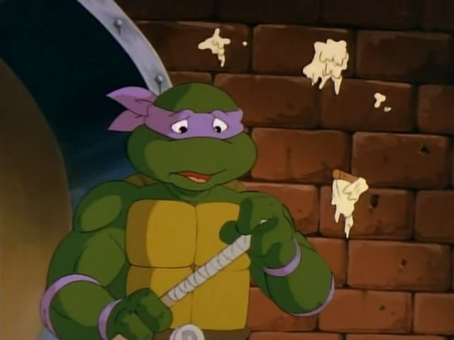

Донателло
Самый спокойный и изобретательный член команды.

Трудолюбивый и прилежный, Донателло считается мозгом команды. У него тонкое чувство юмора, хорошо развитое логическое мышление, он изобретателен и находчив.
Он спокойный, уравновешенный и скромный, а еще он отличный повар. Носит фиолетовую повязку, его оружие - шест Бо.
Другие черепашки
Все черешки